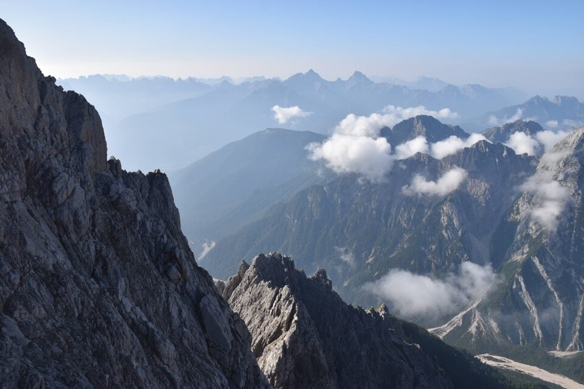
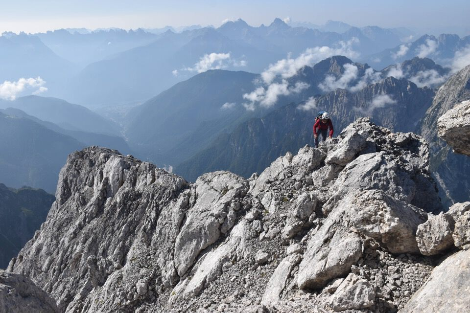
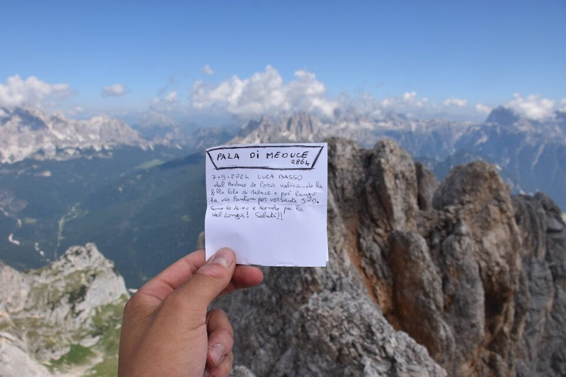
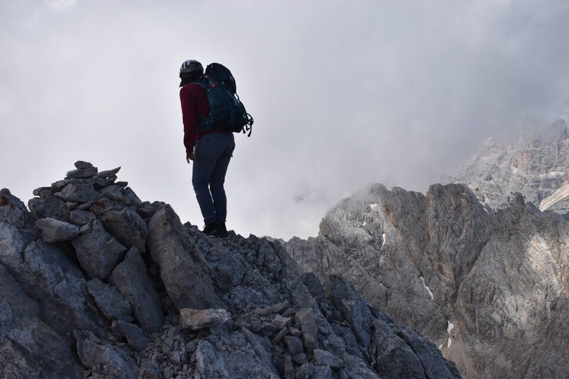
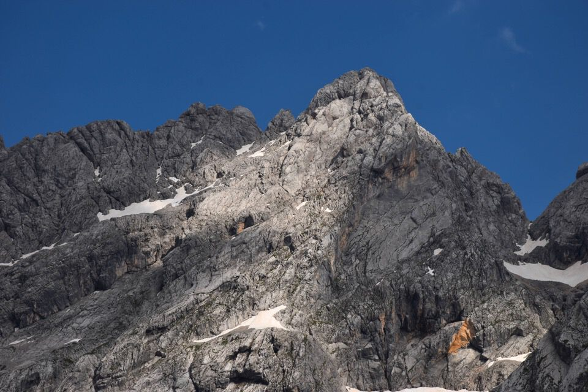

Secondo di due giorni passati nelle Marmarole dormendo al bivacco Tiziano.
Per il primo giorno (Cime di Vallonga) clicca qui.
Ci svegliamo assistendo ad una bellissima alba verso le Dolomiti Auronziane.
L'alba infuoca Cima del Tiziano: arriviamo!
C'inoltriamo nella val Longa.
Ecco lassù la Cima del Tiziano.
Da forcella Tiziano il baratro verso la val d'Oten: val Pelosana.
Appare maestoso l'Antelao.
Dall'altra parte scrutiamo la Pala di Meduce che fra poco saliremo.
Cresta dei Bastioni.
Iniziamo ad attaccare il monte, un po' impressionante visti i precipizi verso la val d'Oten, ma in realtà del tutto facile.
Perdiamo gli omini e finiamo sulla più difficile cresta Sud: meglio così, è stato bellissimo!
Dalla cima verso Antelao e Bastioni.

Val Longa.
Magnifica Cima Schiavina con dietro le Dolomiti di Sesto.
In discesa troviamo altri omini che ci fanno percorrere una via leggermente più facile.

La Cima del Tiziano appena salita.

E ora a tu per tu con la Pala di Meduce.
Croda Vanedel e Orsolina Sud, regno della solitudine assoluta.
La rotta cresta sommitale.
Cima del Tiziano con a sx le Cime di Vallonga salite il giorno prima.
Magnifica la vista verso la val Longa e i Lastoni.
L'ultima visita: un saluto a Luca salito per le vie dei pioneri.
È ora di scendere.
Magnifico il gruppo del Cristallo.

Terreno sempre impegnativo.
Cima di Vallonga Nord.
Magnifico il Cimon del Froppa, salito con Greta l'anno scorso in una indimenticabile giornata autunnale.
Per chiudere l'anello c'incamminiamo verso il biv. Musatti, ma che fatica valicare la Costa Schiavina!
In compenso il panorama è davvero magnifico.
Verso la val d'Ansièi.
Appare superbo il Campanile di San Marco.
Con una luce magnifica ecco la Pala di Meduce...

...e Cima Schiavina.
Bivacco Musatti.
Ed eccoci a fondovalle dopo essere scesi per le Scale del Mescol.
Torniamo alla macchina esausti ma con gli occhi pieni di sogni.